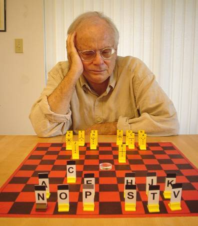

Confusion
 Confusion is based on a pretty amazing concept: at the start of each game, you don’t know how any of your pieces move. There were previous games that had hidden elements, probably the best known (but the least played) is Kriegspiel. Kriegspiel is a chess variation in which you don’t know the current positions of your opponent’s pieces. The game needs a referee, who keeps telling you things like: “No you can’t go there, No you can’t go there, No you can’t go there, Now you’re in check, You just put the opponent in check.” Eventually you’re supposed to get a vague picture of your opponent’s pieces. I have played this game and can report that it is absolutely no fun at all. It is possible to computerize the referee, but that is no help. Another precedent with hidden elements is Stratego, which was published by Jumbo. Each piece in Stratego had a number, and a piece with a higher could capture a piece with a lower number. You always know where your opponent’s pieces are, but you don’t know what number is assigned to each piece. I played Stratego a lot (that was 50 years ago) and I really liked the game. And the final precedent I’ll mention is my card game Eleusis. At the start of each new hand in Eleusis, you do not know the rule that determines what cards can be played. I invented Confusion in the 1970s. The initial work I did on the game was great fun, because I had a brilliant group of play-testers. These included Bob Whittrock and Robin King. Robin now writes reviews for GAMES magazine. The main problem we had during play-testing was providing some balance among the pieces. For example, we had one piece that we nicknamed “the claw.” It could move diagonally forward three squares or it could move straight back for three squares. The claw took over the game. All each player did was look for his claw so he could use it to win the game. By the way, having pieces that were very weak never seemed to be a problem. You’ll notice that in the final version of the game, there are four fairly weak pieces that can move only one square. By 1980 I had the game in a final format, and I started looking for a publisher. By 2005 I was still looking. The picture at the top of this page (it’s from 2003) shows me playing with the equipment I developed for Confusion. My gloomy expression reflects the fact that I never found a publisher for the game. But I think it’s still an interesting picture. It was used to illustrate the entry about me in Wikipedia. But then—in 2009—long after I had given up on Confusion, a miracle happened: a company wanted to publish the game. The company is Stronghold Games, which is run by a couple of geniuses who are very serious about games. Confusion should be out by the fall of 2010, and when it is, I’ll add some pictures of the game to my site. In the meantime, you might check out the Stronghold Games web site. Maybe I shouldn’t be surprised that Confusion found a publisher at this late date. There is currently a huge resurgence in games, with many players, many conventions, and many companies involved. When I first started inventing games, there was only Parker Brothers and Milton Bradley, and nothing much was happening. It’s too bad that the old game inventors I knew, Sid Sackson, Alex Randolph, and Claude Soucie, are not still alive to see this current resurgence in games. |
|
Note, July 10, 2011: A couple of paragraphs up from this note, I wrote that Confusion should be out by the fall of 2010. Currently the estimate is that copies will be in stores sometime in September of 2011. I’m not sure what caused this delay, but I suspect it’s a consequence (well a minor consequence) of the fact that a large portion of American manufacturing has disappeared. The guys at Stronghold had to work with a Chinese company to get anything built. The company in China made some mistakes in the way they built the pieces, and it took a while to get the pieces corrected and rebuilt. That sort of thing would not have happened in the old Parker Brothers days. I still haven’t seen the final product, so I can’t put any pictures on this web site. However, the game is getting a lot of publicity. Here is a fascinating video review of Confusion, and there is a long interview with me on Board Game Geek. Note, August 24, 2011: Here is yet another fascinating video review of Confusion. |